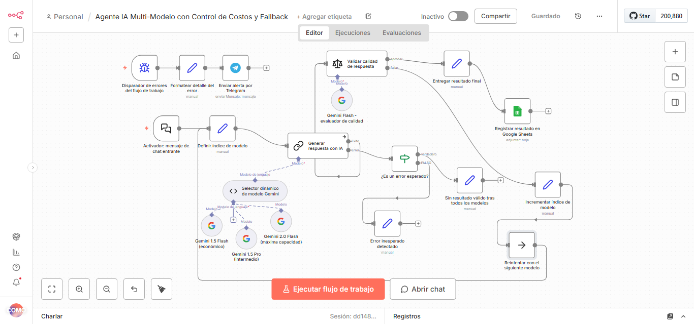
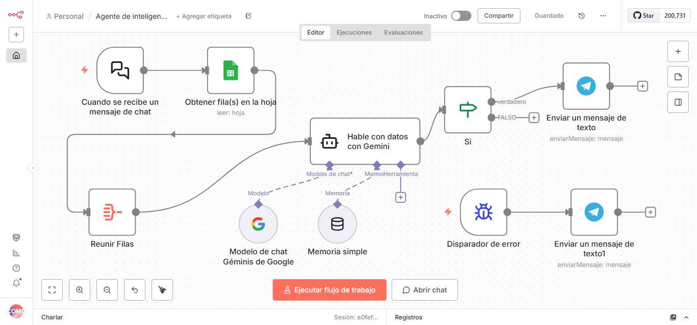
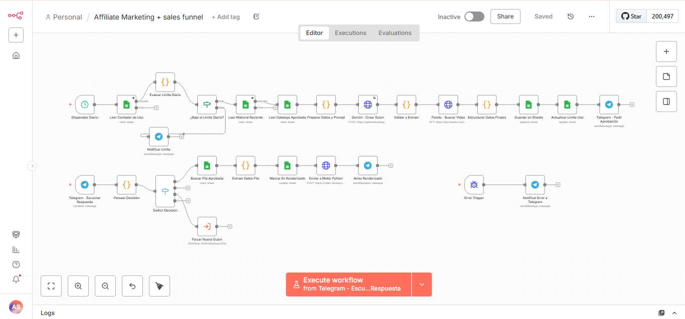
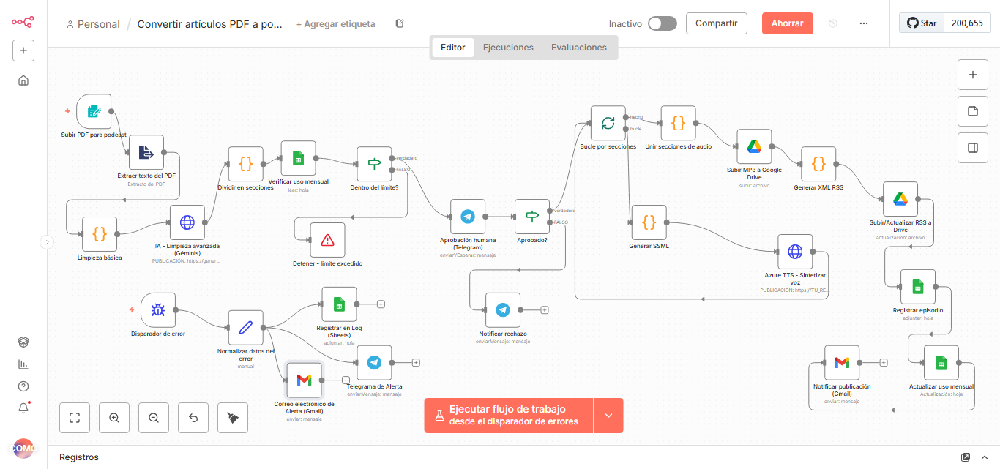

María Ayelén Segreti
Automatización de procesos y agentes de IA con n8n
Especialista autodidacta en automatización de procesos y agentes de IA. Desde 2023 diseño y despliego flujos en n8n con LLMs (Claude, Gemini, OpenAI), APIs REST y Webhooks, sobre mi propio servidor (VPS, Docker, Nginx). Construí agentes multi-modelo, asistentes con RAG y pipelines end-to-end. Antes co-fundé y operé un restaurante (2018–2023), por lo que conozco la operación de hospitalidad desde adentro. Trabajo bien en equipo y codo a codo con quienes toman las decisiones.
Trayectoria profesional y resolución autónoma de problemas
Diseño, despliegue y mantenimiento en producción de flujos en n8n con LLMs (Claude, Gemini, OpenAI), APIs REST y Webhooks sobre infraestructura propia (VPS, Docker, Nginx). Construcción de agentes multi-modelo con control de costos y evaluación de calidad, asistentes conversacionales con RAG, pipelines end-to-end y automatización de procesos administrativos con monitoreo de fallos.
Operación de hospitalidad de punta a punta: co-fundación junto a mi equipo, puesta en marcha y gestión diaria de un restaurante propio durante 5 años (atención al cliente, equipo, proveedores, logística y ejecución comercial) hasta su venta. Resolución autónoma de problemas: detección de cuellos de botella operativos y construcción de soluciones prácticas desde cero.
Conecto herramientas y elimino tareas repetitivas
Análisis y rediseño de procesos reales de punta a punta para identificar cuellos de botella y liberar tiempo operativo.
Arquitecturas multi-modelo (Claude, Gemini, OpenAI), evaluación de calidad de respuestas, reintentos automáticos y control de costos.
Conexión bidireccional y robusta entre sistemas, CRMs, ERPs y herramientas SaaS mediante endpoints seguros.
Asistentes con acceso a fuentes dinámicas de conocimiento (Supabase pgvector, Pinecone, Google Sheets) y memoria contextual.
Notificaciones y flujos conversacionales sincronizados por WhatsApp (Evolution API), Telegram y Gmail.
Despliegue y mantenimiento de n8n en servidor VPS propio (Hostinger), Docker y Nginx como proxy inverso.
Flujos con Error Triggers, control de excepciones y alertas automáticas en tiempo real para evitar caídas silenciosas.
Almacenamiento e indexación semántica en Pinecone y Supabase pgvector para búsqueda contextual precisa sobre catálogos y documentación.
Sincronización bidireccional de leads, clientes y facturación entre HubSpot, Airtable, Sheets y sistemas de gestión sin intervención humana.

Agente IA Multi-Modelo
Pipeline PDF → Podcast
Asistente RAG Conversacional
Automatización AdministrativaDesafío: Optimización de costo en tokens y latencia según la dificultad de cada solicitud.
Solución: n8n enruta entre modelos de Google Gemini según la complejidad de la tarea, con nodo de evaluación de calidad, reintento automático, datos en Google Sheets y alertas por Telegram.
⚙ n8n · Google Gemini · Google Sheets · Telegram
Resultado: Enrutamiento inteligente con reducción drástica de costos sin perder precisión en tareas complejas.
✦ Control de costos en tiempo real y alertas automáticas ante fallos.
Desafío: Respuestas contextuales sobre base de conocimiento dinámica y escalado cuando se requiere validación.
Solución: Chat con Gemini que consulta Google Sheets y Supabase, usa el historial para contextualizar respuestas y escala a una persona cuando la validación lo requiere.
⚙ n8n · Google Gemini · Google Sheets · Supabase pgvector
Resultado: Respuestas fiables basadas en contexto verificado, historial y derivación humana programada.
✦ Mitigación activa de alucinaciones y atención continua 24/7.
Desafío: Extracción y conversión estructurada de documentos extensos a episodios de audio con control de calidad.
Solución: Ingesta y limpieza de texto, procesamiento con GPT-4, aprobación humana obligatoria, feed RSS (XML) y publicación en Google Drive.
⚙ n8n · OpenAI GPT-4 · XML / RSS · Google Drive
Resultado: Pipeline end-to-end automatizado con punto de control humano previo a la distribución final.
✦ Generación de audio automatizada sin perder control editorial.
Desafío: Tareas operativas repetitivas en facturación, cobranzas y dispersión en la comunicación con usuarios.
Solución: Agentes con LLMs para facturación, cobranzas y notificaciones multicanal (WhatsApp vía Evolution API, Gmail, Telegram).
⚙ n8n · LLMs · Evolution API (WhatsApp) · Gmail · Telegram
Resultado: Emisión, seguimiento y avisos centralizados y sincronizados en tiempo real.
✦ Eliminación de trabajo manual repetitivo y trazabilidad operativa.
Desafío: Consultas analíticas sobre datos de marketing en lenguaje natural sin tolerar alucinaciones.
Solución: System prompt estricto contra alucinaciones, lógica condicional y alertas por Telegram con manejo de errores.
⚙ n8n · LLMs · Google Sheets · Telegram
Resultado: Extracción y análisis confiable de métricas de rendimiento en tiempo real.
✦ Acceso instantáneo a indicadores clave con validación estricta de datos.
Herramientas y tecnologías que uso en producción
Validación técnica y académica
Universidad Nacional de Córdoba
Skilup
freeCodeCamp
Make